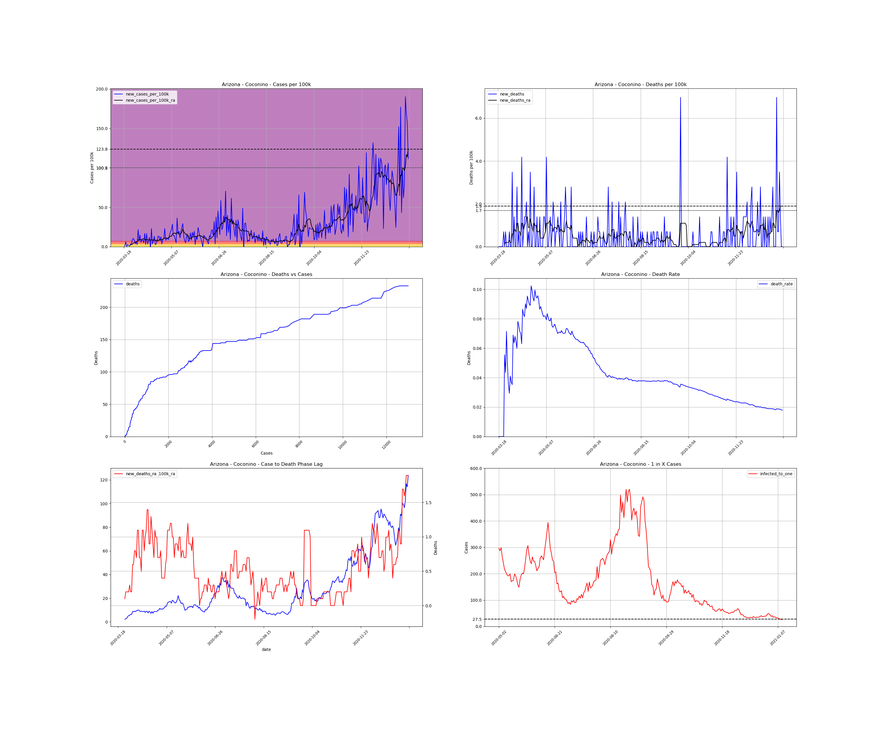
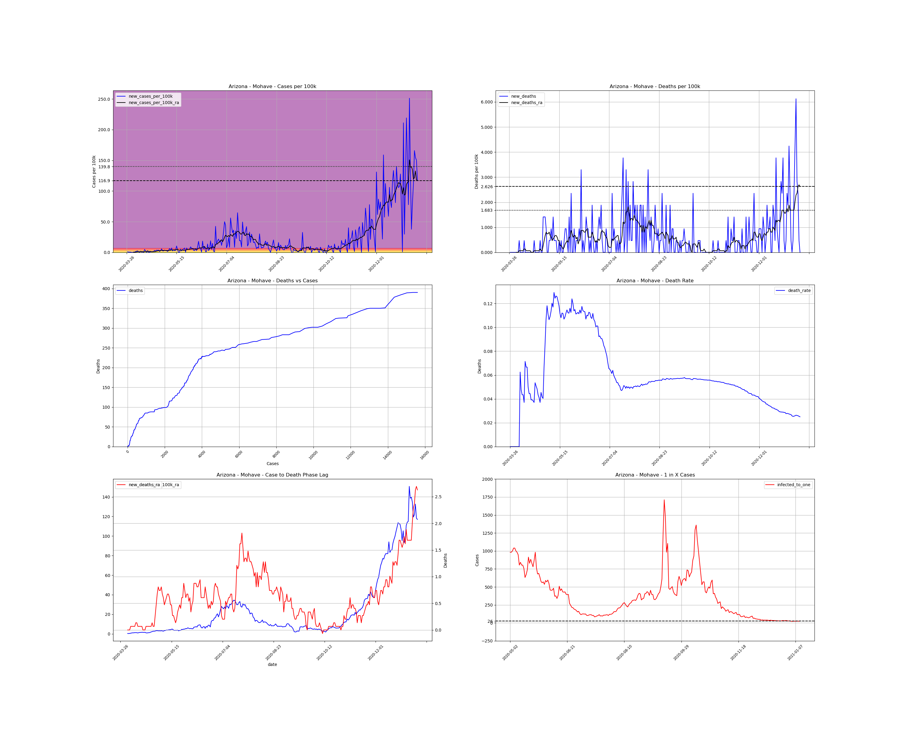
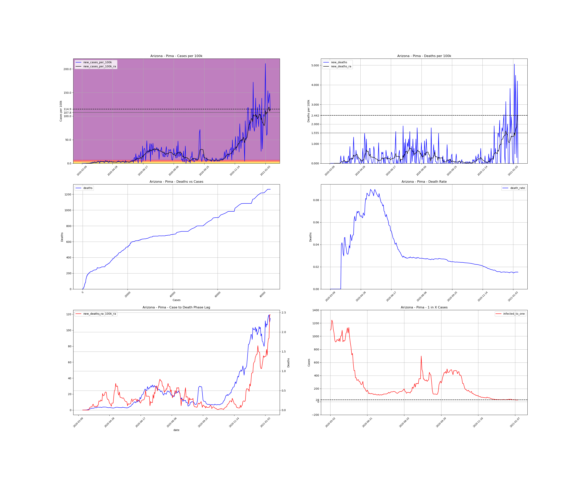

<h1>Arizona Counties</h1><table><tr><td><a #Apache>Apache</a></td></tr><tr><td><a #Cochise>Cochise</a></td></tr><tr><td><a #Coconino>Coconino</a></td></tr><tr><td><a #Gila>Gila</a></td></tr><tr><td><a #Graham>Graham</a></td></tr><tr><td><a #Greenlee>Greenlee</a></td></tr><tr><td><a #La Paz>La Paz</a></td></tr><tr><td><a #Maricopa>Maricopa</a></td></tr><tr><td><a #Mohave>Mohave</a></td></tr><tr><td><a #Navajo>Navajo</a></td></tr><tr><td><a #Pima>Pima</a></td></tr><tr><td><a #Pinal>Pinal</a></td></tr><tr><td><a #Santa Cruz>Santa Cruz</a></td></tr><tr><td><a #Yavapai>Yavapai</a></td></tr><tr><td><a #Yuma>Yuma</a></td></tr></table>